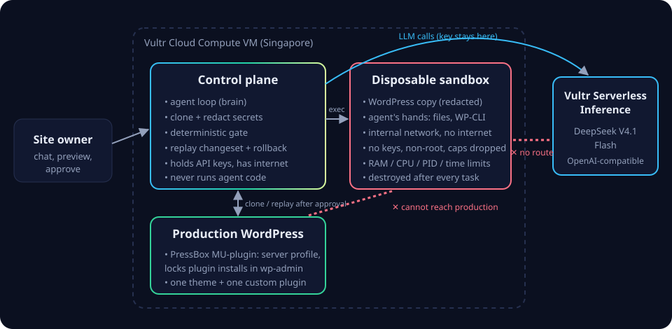

// Vultr Agent Rush · Challenge 1: Blast Radius Zero
Chat with your WordPress site.
Nothing reaches production untested.
Ask for a change in plain words. An AI agent builds it inside a disposable sandbox on Vultr, tests it, and fixes its own mistakes. A deterministic gate checks the result, you preview it, and only then is it replayed onto your live site.
Vultr Cloud Compute
Vultr Serverless Inference
Docker sandboxes
WordPress Agent Skills
43%of all websites run on WordPress (W3Techs).
91%of new WordPress vulnerabilities in 2025 were in plugins (Patchstack).
1 pluginper site with PressBox. Features are written into the site's own custom plugin instead of stacking third-party plugins.
How it works
- Ask"Add a table reservation form to the Contact page."
- Clone and containProduction is copied into a fresh container: secrets redacted, no network, no keys, CPU/RAM/process/time limits, PHP limits copied from production.
- Build and self-correctThe agent (LLM on Vultr Serverless Inference) edits only the site's custom plugin and runs allow-listed WP-CLI. It reads PHP errors from the sandbox and fixes them. It follows the official WordPress Agent Skills.
- GateCode, not the model, decides: PHP lint, every page renders, no fatal errors, no dangerous functions, no outbound calls, PHP extensions match production, admin accounts unchanged.
- Preview and approveClick through the sandbox site and read the exact diff and WP-CLI commands.
- Replay onto productionBackup first, then the changeset is replayed and health-checked, with automatic rollback. The sandbox database is never copied back. The sandbox is destroyed.
Blast radius: zero
Process isolationOne container per task on an internal Docker network. All Linux capabilities dropped, no-new-privileges, non-root. The control plane never executes agent-written code.
No credentials insideAPI keys stay in the control plane. User passwords, sessions and secret-looking settings are redacted before the copy enters the sandbox.
Hard limits512 MB RAM, 1 CPU, 200 processes, per-request PHP time and memory copied from production, step and task timeouts for the agent.
Destroyed every timeApplied, discarded, blocked, failed or expired: every path ends in
docker rm -f, verified and logged. Orphans are removed on restart.The sandbox network has no gateway: no internet, no cloud metadata endpoint, no route to production. When agent code tries to call out, the attempt is logged and the gate blocks the change.
Built on Vultr, end to end

Vultr Cloud ComputeThe control plane, the sandboxes and the production WordPress run on a Vultr VM, provisioned through the Vultr API.
Vultr Serverless InferenceEvery agent call goes to an OpenAI-compatible Vultr endpoint (DeepSeek V4.1 Flash). The key never leaves the control plane.
PressBox MU-pluginShips inside every managed site. Reports the server profile that bounds what a change may use, and locks plugin installs in wp-admin so changes go through PressBox.
Why not just…
| AI site builders | WordPress Studio assistant | Staging site | PressBox | |
|---|---|---|---|---|
| Keeps changing the live site after launch | No, one-shot generation | Local sites only | Manual | Yes, by chat |
| Agent code runs isolated, no secrets | n/a | No | Usually shares server and credentials | Yes |
| Deterministic gate before production | No | No | Manual QA | Yes |
| Replayable changeset with rollback | No | No | Manual | Yes |
| No new third-party plugins | No | No | No | Yes |
See it run
The demo site is Senja Coffee, a small coffee shop. Ask PressBox for a reservation form, watch the agent fix its own error in the sandbox, then apply it to production. Judges: the access code is in our lablab submission.
Open PressBox